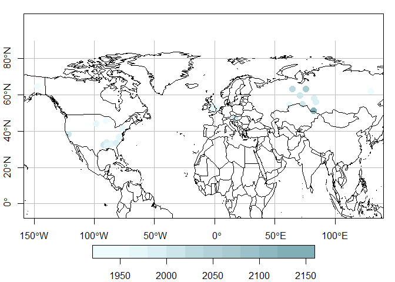

NOAA Obspack is a collection of green house gases observations
rtorf only depends on data.table and ncdf4, which is basically parallel C, so it can be installed in any machine.
ObsPack summary
The first step consists in constructing a summary for the ObsPack. This is required to read the data, but also, identify agl, which is present in some of the file names. This function returns a data.frame. Optionally, the user can indicate a path to store the data.frame. obs_summary also prints a summary of the data. The second argument is the categories, and by default includes the categories shown below, to account for all the files. Then the summary data.frame contains the columns id as the full path to each file, name which is the name or relative path of the file, n just an id, sector such as tower, and the column agl which indicates the agl indicated in the name of the file if available. To read the documentation of this function, the user must run ?obs_summary.
We first define the categories
cate = c("aircraft-pfp",
"aircraft-insitu",
"aircraft-flask",
"surface-insitu",
"surface-flask",
"surface-pfp",
"tower-insitu",
"aircore",
"shipboard-insitu",
"shipboard-flask")
obs <- "Z:/torf/obspack_ch4_1_GLOBALVIEWplus_v5.1_2023-03-08/data/nc/"
index <- obs_summary(obs = obs, categories = cate)## Number of files of index: 429
## sector N
## <char> <int>
## 1: aircraft-pfp 40
## 2: aircraft-insitu 15
## 3: surface-flask 106
## 4: surface-insitu 174
## 5: aircraft-flask 4
## 6: aircore 1
## 7: surface-pfp 33
## 8: tower-insitu 51
## 9: shipboard-flask 4
## 10: shipboard-insitu 1
## 11: Total sectors 429
## Detected 190 files with agl
## Detected 239 files without aglThere are 429 files in the ObsPack directory. The printed information also shows the total at the bottom, as the sum of the individual file by sector. This is to ensure that the sum of files is equal to the total number of files found, shown at the top. furthermore, the printed information also shows that there are 109 files with the agl explicitly mentioned in the name of the file.
Read data
Once the summary is built, the function obs_read will read the files available in the index file previously generated. Here we selected the category “tower-insitu”. The argument verbose prints which files are being read each time, by default. At the end, this function prints the total number of observations by type of altitude (agl or asl).
df <- obs_read_nc(index = index,
categories = "tower-insitu")intake_height or altitude_final
The identification of the altitude and type is critical. The approach used here consists of:
- Use intake_height
- Identify
aglfrom the name of the tile. - If
aglis not present,agl = altitude - site_elevation. - If there are some NA in elevation, will result some NA in
agl - A new column is added named
altitude_finalto storeaglorasl - Another column named
type_altitudeis added to identifyaglas 0, oraslas 1.
To maintain a coherent approach among text and NetCDF files, we will add a column altitude_final and type_altitude. This is done in obs_read_nc or obs_read.
Sometimes we need more information about the site. For instance, what do the observations start and end. Then, we added the function obs_table, which calculates statistics summary of “time” and other numeric variables by file name, sector, site, altitude and mode.
dft <- obs_table(df = df)Now we can visualize the average of observations by site.
library(sf)
sdft <- st_as_sf(dft[stat == "mean"],
coords = c("longitude", "latitude"),
crs = 4326)
sdft$value <- sdft$value*1e09
plot(sdft["value"],
reset = FALSE,
axes = TRUE,
graticule = TRUE,
pch = 16,
cex = 1.5,
pal = cptcity::lucky(colorRampPalette = T), #random
main = NULL)
maps::map(add = T)
Let us randomly select a couples of sites from the database.
| site_name | site_latitude | site_longitude | site_country | site_code | value | time | time_decimal | latitude | longitude | stat | timeUTC |
|---|---|---|---|---|---|---|---|---|---|---|---|
| Danville, Virginia | 36.7058 | -79.4369 | United States | DVV | 1.847e-06 | 1468449000 | 2017 | 36.71 | -79.44 | min | 2016-07-13 22:30:00 |
| Danville, Virginia | 36.7058 | -79.4369 | United States | DVV | 1.945e-06 | 1483676100 | 2017 | 36.71 | -79.44 | q1 | 2017-01-06 04:15:00 |
| Danville, Virginia | 36.7058 | -79.4369 | United States | DVV | 1.966e-06 | 1494000000 | 2017 | 36.71 | -79.44 | median | 2017-05-05 16:00:00 |
| Danville, Virginia | 36.7058 | -79.4369 | United States | DVV | 1.970e-06 | 1493261865 | 2017 | 36.71 | -79.44 | mean | 2017-04-27 02:57:45 |
| Danville, Virginia | 36.7058 | -79.4369 | United States | DVV | 1.994e-06 | 1504986300 | 2018 | 36.71 | -79.44 | q3 | 2017-09-09 19:45:00 |
| Danville, Virginia | 36.7058 | -79.4369 | United States | DVV | 2.356e-06 | 1514763000 | 2018 | 36.71 | -79.44 | max | 2017-12-31 23:30:00 |
| Noyabrsk | 63.4292 | 75.7800 | Russia | NOY | 1.848e-06 | 1130434200 | 2006 | 63.43 | 75.78 | min | 2005-10-27 17:30:00 |
| Noyabrsk | 63.4292 | 75.7800 | Russia | NOY | 1.985e-06 | 1326479400 | 2012 | 63.43 | 75.78 | q1 | 2012-01-13 18:30:00 |
| Noyabrsk | 63.4292 | 75.7800 | Russia | NOY | 2.038e-06 | 1418131800 | 2015 | 63.43 | 75.78 | median | 2014-12-09 13:30:00 |
| Noyabrsk | 63.4292 | 75.7800 | Russia | NOY | 2.064e-06 | 1405484932 | 2015 | 63.43 | 75.78 | mean | 2014-07-16 04:28:52 |
| Noyabrsk | 63.4292 | 75.7800 | Russia | NOY | 2.108e-06 | 1500283800 | 2018 | 63.43 | 75.78 | q3 | 2017-07-17 09:30:00 |
| Noyabrsk | 63.4292 | 75.7800 | Russia | NOY | 3.755e-06 | 1572496200 | 2020 | 63.43 | 75.78 | max | 2019-10-31 04:30:00 |
We added a function to plot the data read from ObsPack. The y-axis is the field value and the x-axis is by default time. The data illustrated sorted by color is the field site_code, with the default number of 3 sites. The argument pal is to define the color palette, used by the internally imported function cptcity::cpt.
Here we can see 2.61 million observations for tower-insitu. These observations are made between 2004 and 2021.
Filtering
ObsPack includes global observations and sometimes we need to extract data for a specific region and periods of time. In this part we include spatial and temporal parameters to filter data. The year of interest is 2020, but we also included December of 2019 and January of 2021. At this stage, we can apply the spatial filter by using the coordinates.
north <- 80
south <- 10
west <- -170
east <- -50
max_altitude <- 8000
evening <- 14
yy <- 2020
df <- rbind(df[year == yy - 1 & month == 12],
df[year == yy],
df[year == yy + 1 & month == 1])
df <- df[altitude_final < max_altitude &
latitude < north &
latitude > south &
longitude < east &
longitude > west]
unique(df[, c("altitude_final", "site_elevation", "elevation",
"dataset_selection_tag",
"site_name")])## altitude_final site_elevation elevation dataset_selection_tag
## <num> <num> <num> <char>
## 1: 17.1 611.43 611.43 allvalid-17magl
## 2: 31.7 611.43 611.43 allvalid-32magl
## 3: 4.9 611.43 611.43 allvalid-5magl
## 4: 122.0 472.00 472.00 allvalid-122magl
## 5: 30.0 472.00 472.00 allvalid-30magl
## 6: 396.0 472.00 472.00 allvalid-396magl
## 7: 304.8 115.20 115.20 allvalid-305magl
## 8: 31.0 115.20 115.20 allvalid-31magl
## 9: 61.0 115.20 115.20 allvalid-61magl
## 10: 30.0 2.00 2.00 allvalid-30magl
## 11: 484.0 2.00 2.00 allvalid-483magl
## 12: 89.1 2.00 2.00 allvalid-91magl
## site_name
## <char>
## 1: Carbon in Arctic Reservoirs Vulnerability Experiment (CARVE)
## 2: Carbon in Arctic Reservoirs Vulnerability Experiment (CARVE)
## 3: Carbon in Arctic Reservoirs Vulnerability Experiment (CARVE)
## 4: Park Falls, Wisconsin
## 5: Park Falls, Wisconsin
## 6: Park Falls, Wisconsin
## 7: Beech Island, South Carolina
## 8: Beech Island, South Carolina
## 9: Beech Island, South Carolina
## 10: Walnut Grove, California
## 11: Walnut Grove, California
## 12: Walnut Grove, CaliforniaAfter filtering by space and time, we have 1.12883^{5} million observations. Towers can have observations at different heights. Here we need to select one site with the observations registered at the highest height. The column with the height is named altitude_final and the max altitude was named max_altitude.
Key Time
Here we need to start time columns. The function obs_addtime adds time columns timeUTC, timeUTC_start which shows the start time of each observation and timeUTC_end which shows the end time for each observation.
df2 <- obs_addtime(df)Then we need a key_time to aggregate data. This can be done using UTC, solar, or local time. The normal approach is using afternoon solar or local time.
Hierarchy of solar or local time
- Solar time
- Local time with columns
site_utc2lst - Local time longitude
solar time (default)
Here we select the hours of interest and then aggregate data by year, month and day of solar time. In this way, we will have one information per day. however this approach is not appropriate for aircraft which are aggregated every 10 or 20 seconds. Hence we need to aggregate data by one time column. Also, this helps to generate the receptor info files including hour, minute and second. Hence, we need to add solar or local time column.
df2$solar_time <- obs_addstime(df2)local time with column
site_utc2lst
Then we need to identify the local time with the function add_ltime. This is important because to identifying observations in the evening in local time. add_ltime uses two methods, first identify the time difference with utc by identifying the metadata column “site_utc2lst”. If solar time is not available #now we need to cut solar time for the frequency needed. As we will work with
local time longitude
If this information is not available, with the aircrafts for instance, the local time is calculated with an approximation based on longitude:
Where is the local time, the time, the coordinate. Then, the time is cut every two hours. Now, we identify the local time to select evening hours.
Cut time
Now we have they key column time, we can cut it accordingly.
df2$solar_time_cut <- cut(x = df2$solar_time,
breaks = "1 hour") |>
as.character()How we can check the solar time and the cut solar time. Please note that solar_time_cut, the column that it will be used to aggregate data
How we filter for the required solar time, in this case 14.
## solar_time solar_time_cut
## <POSc> <char>
## 1: 2019-12-02 14:49:12 2019-12-02 14:00:00
## 2: 2019-12-03 14:48:48 2019-12-03 14:00:00
## 3: 2019-12-04 14:48:24 2019-12-04 14:00:00
## 4: 2019-12-05 14:48:00 2019-12-05 14:00:00
## 5: 2019-12-06 14:47:35 2019-12-06 14:00:00
## ---
## 4312: 2021-01-27 14:11:38 2021-01-27 14:00:00
## 4313: 2021-01-28 14:11:26 2021-01-28 14:00:00
## 4314: 2021-01-29 14:11:14 2021-01-29 14:00:00
## 4315: 2021-01-30 14:11:03 2021-01-30 14:00:00
## 4316: 2021-01-31 14:10:52 2021-01-31 14:00:00Now there are 4316 observations and before filtering 112883. At this point we can calculate the averages of several columns by the cut time. The function obs_agg does this aggregation as shown in the following lines of code. The argument gby establish the function used to aggregate cols. I need to aggregate the data by date (year, month, date), because it is already filtered by the hours of interest. Then, I would have 1 observation per day.
As standard, let us define key_time as solar_time. The obs_agg function will aggregate the desired data by that column.
df3$key_time <- df3$solar_time_cut
df4 <- obs_agg(dt = df3,
gby = "mean",
cols = c("value",
"latitude",
"longitude",
"site_utc2lst"),
verbose = T,
byalt = TRUE)Now there are 4316 observations, 108567 less observations. Here we add the column max_altitude to identify the max altitude by site.
df4[,
max_altitude := max(altitude_final),
by = site_code]
df4[,
c("site_code",
"altitude_final",
"max_altitude")] |> unique()## site_code altitude_final max_altitude
## <char> <num> <num>
## 1: CRV 17.1 31.7
## 2: CRV 31.7 31.7
## 3: CRV 4.9 31.7
## 4: LEF 122.0 396.0
## 5: LEF 396.0 396.0
## 6: LEF 30.0 396.0
## 7: SCT 304.8 304.8
## 8: SCT 31.0 304.8
## 9: SCT 61.0 304.8
## 10: WGC 30.0 484.0
## 11: WGC 484.0 484.0
## 12: WGC 89.1 484.0Saving master as text and csvy
Now that we have all the required information, we can save the files. Here, we name the data.frame as master, because it contains all the information. This is important because some fields can be used in the future, and for traceability. For convenience, time variables are transformed into character before writing into the disk. The separation is space ” “.
master <- df3
master$timeUTC <- as.character(master$timeUTC)
fwrite(master,
file = paste0(tempdir(), "/tower_insitu_2020.txt"),
sep = " ")The format Comma Separated Value with YAML (CSVY)[^3] consists in a typical CSV with a YAML header. The functionobs_write_csvy includes the argument notes which allows adding custom notes at the header of the file. Below the notes, obs_write_csvy adds the output of the R function str, which provides a vertical summary of the data, known as structure.
csvy <- paste0(tempdir(), "/tower_insitu_2020.csvy")
obs_write_csvy(dt = master,
notes = "tower 2020",
out = csvy
)To check the YAML header we read the first 38 lines of the files that were generated. Here we can see the column names, type of data and first observations. The YAML header is delimited by the characters “—”.
readLines(csvy)[1:34] # and moreSaving receptors
We need to filter some columns from the master files in a new object called receptors. This is needed because internally we run HYSPLIT [@hy] using the information from the receptors. In the case of a tower, we need to select observations with the highest altitude. The specific columns are selected as shown on the following code. We are selecting the ending times, because later HYSPLIT is run backwards based on the time of measurement, between ending and starting times. The columns about time are formatted to have two characters. For instance, the month 1, is formatted as “01”. We also need to filter for type_altitude equal 0, representing aglobservations , or equal to 1, asl.
receptor <- master[altitude_final == max_altitude,
c("site_code",
"year",
"month",
"day",
"hour",
"minute",
"second",
"latitude",
"longitude",
"altitude_final",
"type_altitude",
"year_end",
"month_end",
"day_end",
"hour_end",
"minute_end",
"second_end",
"time_decimal")]
receptor$altitude_final <- round(receptor$altitude_final)
receptor <- obs_format(receptor)
if(nrow(receptor_agl) > 0) {
fwrite(x = receptor_agl,
file = paste0(tempdir(), "/receptor_tower_insitu_2020_AGL.txt"),
sep = " ")}
if(nrow(receptor_asl) > 0) {
fwrite(x = receptor_asl,
file = paste0(tempdir(), "/receptor_tower_insitu_2020_ASL.txt"),
sep = " ")}Application for other sectors
In this package we are sharing scripts to process other sectors The scripts are available in the path https://github.com/ibarraespinosa/rtorf/tree/main/rscripts
Implementation in python:
I’m currently implementing a version in python:
| R | description | Python |
|---|---|---|
| fex | File extension | |
| invfile | Methods for objects with class ‘invfile’ | |
| obs_addltime | local hour (bsed on longitude and time) | |
| obs_addstime | Add solar time into obspack | |
| obs_addtime | Add times into obspack | |
| obs_agg | Aggregates ObsPack by time | |
| obs_find_receptors | Compares expected receptors | |
| obs_footname | Expected footprint name | |
| obs_format | Formatting data | |
| obs_freq | return numeric vector in intervals | |
| obs_index | Summary of the ObsPack files (.txt) | OK |
| obs_invfiles | Generate files to perform inverse modeling | |
| obs_list.dt | list.dt | |
| obs_meta | Read obspack metadata | |
| obs_out | outersect | |
| obs_plot | Read obspack metadata | |
| obs_rbind | rbind obspack | |
| obs_read | Read obspack (.txt) | |
| obs_read_csvy | reads CSVY | |
| obs_read_nc | Read obspack (.nc) | OK |
| obs_roundtime | round seconds from “POSIXct” “POSIXt” classes | |
| obs_summary | Summary of the ObsPack files (.txt) | |
| obs_table | Obspack Table | |
| obs_trunc | Trunc numbers with a desired number of decimals | |
| obs_write_csvy | Generates YAML and write data.frame | |
| plot.invfile | Methods for objects with class ‘invfile’ | |
| print.invfile | Methods for objects with class ‘invfile’ | |
| sr | Extacts n last characters | |
| summary.invfile | Methods for objects with class ’invfile |